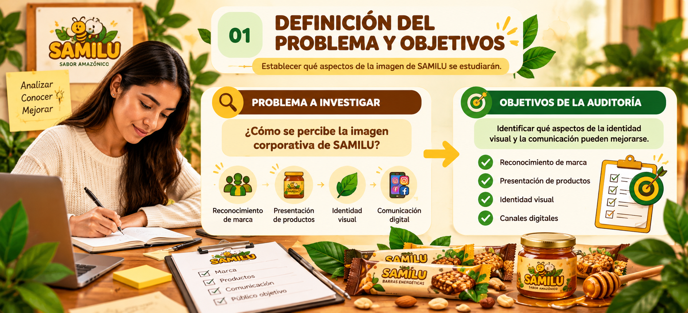
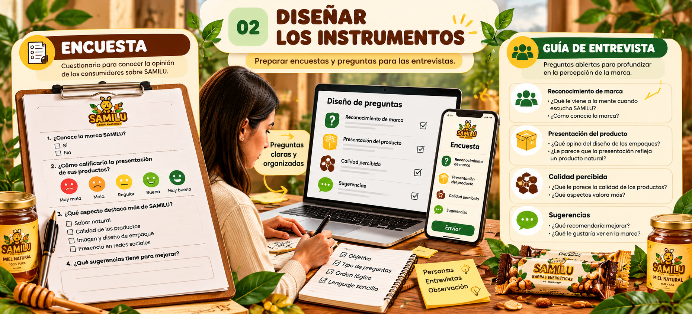
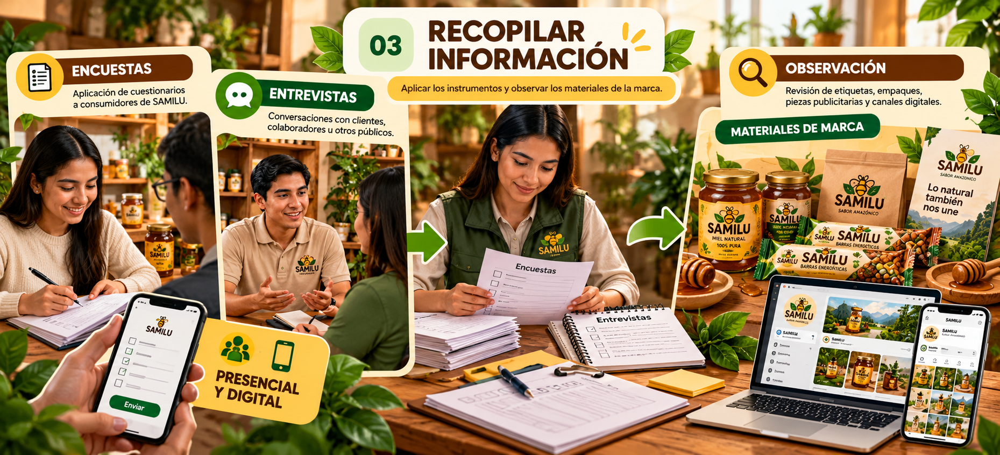
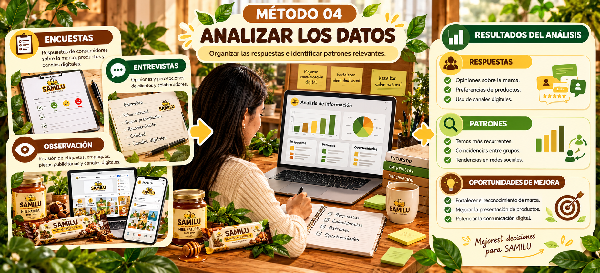
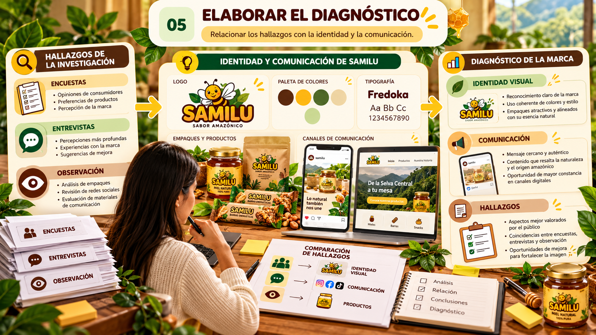
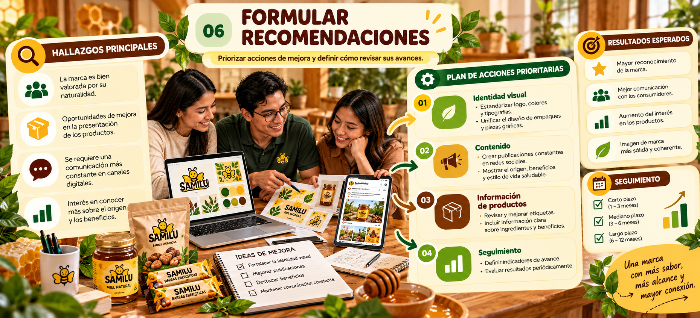

Evaluar la imagen corporativa de SAMILU para identificar fortalezas, aspectos por mejorar y oportunidades de comunicación que permitan fortalecer su identidad, mantener una presentación coherente y contribuir a su reconocimiento y posicionamiento.
SAMILU · IDENTIDAD Y COMUNICACIÓN
Auditoría de imagen
Conocer cómo se presenta SAMILU, qué transmite su identidad y qué oportunidades existen para fortalecer su imagen corporativa.
Explorar auditoría ↘
Punto de partida
Necesidad de investigación
Conocer la imagen que SAMILU proyecta y detectar oportunidades de mejora.
✦
¿Por qué realizar esta auditoría?
La auditoría permitirá revisar la identidad visual, la comunicación y la percepción de SAMILU para reconocer qué funciona y qué puede mejorar.
SAMILU elabora crema untable, barras energéticas y miel saborizada en la Selva Central, Junín. El análisis ayudará a fortalecer la presentación de los productos y la coherencia de sus materiales.
01.01
Objetivo general
01.02
Objetivos específicos
Analizar la identidad visual
Revisar el logotipo, los colores, las tipografías y los elementos gráficos que identifican a SAMILU.
Conocer la percepción del público
Plantear instrumentos para conocer la opinión sobre la marca, sus productos, su presentación y su comunicación.
Evaluar la comunicación
Examinar los canales digitales y los materiales publicitarios para identificar oportunidades de mejora.
Identificar factores clave
Organizar las fortalezas, debilidades, oportunidades y amenazas relacionadas con la comunicación corporativa.
Revisión de la marca
Proceso de auditoría
Una revisión organizada de la identidad, los materiales y la comunicación.
Etapa 01
Revisión de la identidad visual
Se examinan el logotipo, la paleta de colores, las tipografías y la presentación de los productos.
Ejemplo de aplicación
Comprobar si las etiquetas, los afiches y las publicaciones utilizan los mismos colores y el mismo logotipo.
Etapa 02
Revisión de la comunicación
Se observa cómo se presenta la marca en sus materiales y canales de comunicación.
Ejemplo de aplicación
Revisar si una publicación informa claramente qué producto se ofrece y cómo consultar por él.
Etapa 03
Evaluación de la percepción
Se recoge información para conocer cómo el público reconoce y comprende la marca.
Ejemplo de aplicación
Preguntar a los participantes qué les comunica el envase y qué producto recuerdan con mayor facilidad.
01Observar
Revisar materiales.
02Recopilar
Obtener opiniones.
03Analizar
Identificar hallazgos.
04Proponer
Priorizar mejoras.
Método de trabajo
Plan de investigación
Organización de las actividades para recoger y analizar información.
03.01
Planteamiento del problema
Pregunta central de investigación
¿Cómo se percibe la imagen corporativa de SAMILU y qué aspectos de su identidad visual y comunicación pueden mejorarse?
La investigación busca conocer la percepción del público y revisar la coherencia de los materiales de la marca.
03.02
Metodología de la investigación
MÉTODO 01
Encuestas
Recoger opiniones sobre el reconocimiento de SAMILU, la presentación y la claridad de sus productos.
MÉTODO 02
Entrevistas
Conocer opiniones y sugerencias mediante preguntas directas sobre la marca y sus productos.
MÉTODO 03
Observación
Revisar etiquetas, empaques, piezas publicitarias y canales digitales de SAMILU.
MÉTODO 04
Análisis de información
Organizar las respuestas, reconocer coincidencias y detectar aspectos por mejorar.
03.03
Población y muestra
Población
Jóvenes, adultos y público en general que podrían conocer o consumir los productos de SAMILU.
Muestra propuesta
Como ejemplo académico, se podría proponer una muestra inicial de 30 participantes.
Importante: los 30 participantes son una propuesta ilustrativa, no un resultado real ni una garantía de representatividad. La muestra definitiva deberá establecerse antes de aplicar la investigación.
03.04
Actividades del plan de investigación
Definir el problema y los objetivos
Establecer qué aspectos de la imagen de SAMILU se estudiarán.

Planteamiento del problema y definición de los objetivos de investigación.
Diseñar los instrumentos
Preparar encuestas y preguntas para las entrevistas.

Preparación de las fichas y preguntas para recopilar información.
Recopilar información
Aplicar los instrumentos y observar los materiales de la marca.

Aplicación de los instrumentos y revisión de los materiales de SAMILU.
Analizar los datos
Organizar las respuestas e identificar patrones relevantes.

Organización de las respuestas e identificación de coincidencias y oportunidades.
Elaborar el diagnóstico
Relacionar los hallazgos con la identidad y la comunicación.

Interpretación de los hallazgos para evaluar la imagen de la marca.
Formular recomendaciones
Priorizar acciones de mejora y definir cómo revisar sus avances.

Acciones recomendadas para fortalecer la identidad y la comunicación de SAMILU.
03.05
Cronograma de actividades
Selecciona una semana para consultar las actividades previstas.
03.06
Resultados esperados
Qué se busca obtener
Información útil para mejorar la marca
Se espera identificar cómo se percibe SAMILU y qué aspectos de su imagen y comunicación pueden mejorarse.
Los hallazgos podrán orientar mejoras en la identidad visual, la información de productos y los canales digitales.
Ejemplo de aplicación
Si la investigación mostrara que las publicaciones presentan los productos de forma inconsistente, se podría recomendar unificar los elementos visuales y organizar el contenido.
Análisis estratégico
Identificación de fortalezas y FODA
Organización de los factores internos y externos que influyen en la imagen de SAMILU.
✦
¿Para qué sirve el FODA?
Permite reconocer fortalezas y debilidades internas, además de oportunidades y amenazas externas, para orientar las decisiones de mejora.
F
Fortalezas
Interno · Positivo- Identidad visual relacionada con la miel y la naturaleza.
- Tres líneas de productos que permiten variar los contenidos.
- Vínculo con la Selva Central como atributo diferenciador.
- Personalidad cálida, cercana e innovadora.
O
Oportunidades
Externo · Positivo- Videos breves para mostrar productos y presentaciones.
- Contenido educativo sobre la miel y sus derivados.
- Catálogo digital para facilitar la consulta de productos.
- Adaptación de piezas para distintos canales digitales.
D
Debilidades
Interno · Por mejorar- Falta de un calendario editorial consolidado al inicio del plan.
- Necesidad de definir responsables y tiempos de aprobación.
- Información de producto que debe unificarse entre los materiales.
- Falta de una línea base común para evaluar los resultados.
A
Amenazas
Externo · Riesgos- Competidores con mayor frecuencia de publicación.
- Cambios en las preferencias y formatos digitales.
- Saturación de contenidos comerciales en redes sociales.
- Riesgo de confundir al público si los datos de los productos no se actualizan.
Acciones de mejora
Propuestas y acciones
Acciones que pueden evaluarse según los resultados reales de la auditoría.
Identidad
Estandarizar la marca
Usar de manera consistente el logotipo, los colores y las tipografías en los materiales.
Contenido
Mejorar las publicaciones
Organizar fotografías, textos y formatos para presentar claramente cada producto.
Información
Verificar los datos de producto
Mantener información uniforme y actualizada en etiquetas, catálogo y publicaciones.
Seguimiento
Medir los resultados
Definir indicadores y revisar periódicamente el desempeño de las acciones de comunicación.
Cierre de la auditoría
Conclusiones y proyección
Ideas principales para orientar la mejora de la marca.
La auditoría permitirá revisar la identidad visual y la coherencia de la comunicación de SAMILU.
Las encuestas, entrevistas y la observación ayudarán a conocer la percepción del público.
El FODA permitirá ordenar los factores internos y externos relacionados con la marca.
Las propuestas deberán priorizarse según los hallazgos obtenidos en la investigación.
La revisión periódica ayudará a mantener una imagen reconocible y coherente en los canales físicos y digitales.